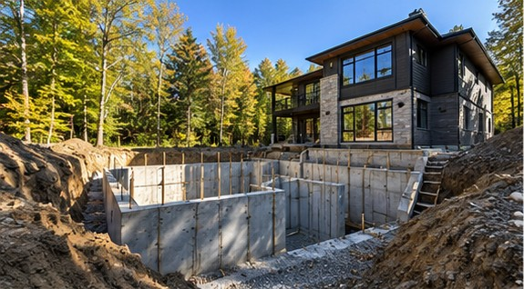
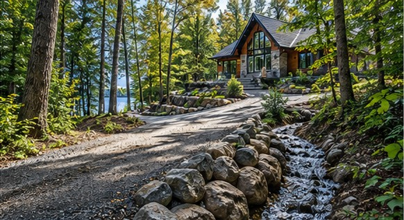
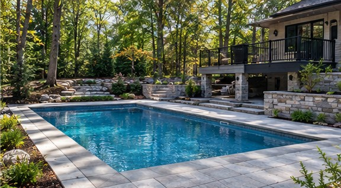
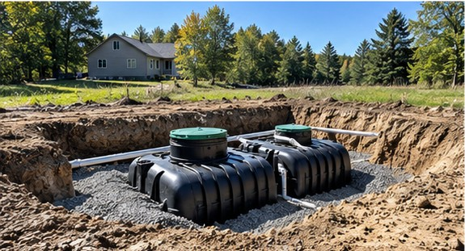
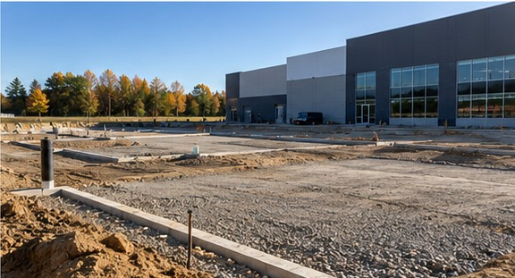

Foundation & Structural Excavation
Foundations, basements, additions, underpinning and exterior waterproofing trenches. Accurate excavation lays the groundwork for lasting construction.
Precision earthworks. Thoughtful site preparation. Built for Ontario properties.
Discuss Your Project ↗Residential, rural, agricultural and small commercial excavation, thoughtfully planned around access, drainage, soil conditions and the needs of each site. From foundations and utility trenches to pools, driveways, septic systems and water management, Oakwaters can help you plan the work beneath the surface.

Foundations, basements, additions, underpinning and exterior waterproofing trenches. Accurate excavation lays the groundwork for lasting construction.

Site grading, drainage swales, ditching, culverts, weeping tile and water diversion to move runoff away from buildings and vulnerable areas.

Excavation for in-ground pools, driveway sub-bases, patios, retaining walls and hardscaping, including preparation for snow-melting systems.

Excavation for septic tanks and leaching beds, private-well service trenches, land clearing, lot preparation and rural access roads.

Farm drainage, ponds, barn and silo site preparation, field access lanes and utility trenching to support working rural properties.

Parking areas, loading zones, utility connections, stormwater management and demolition debris removal for smaller commercial sites.
Tell us about your property, site conditions and project goals. We'll discuss the excavation and site-preparation work involved.
Contact Oakwaters ↗